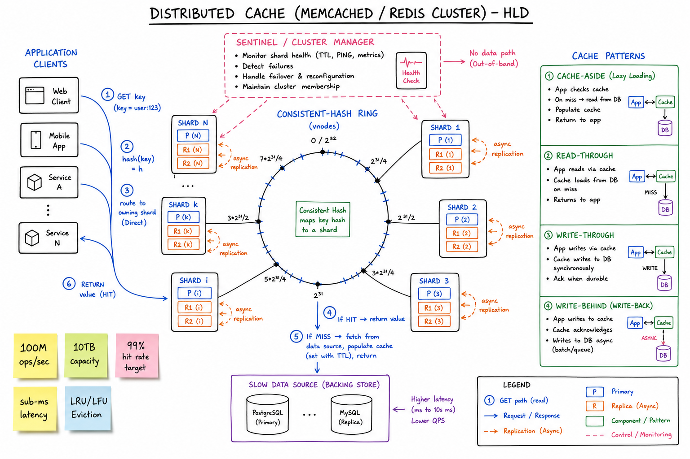
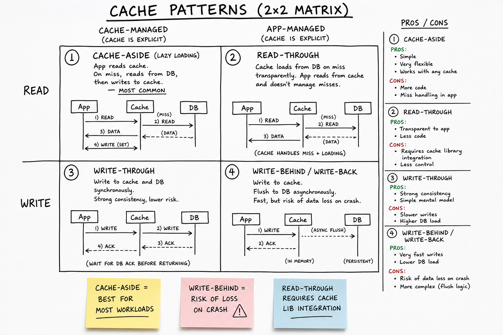
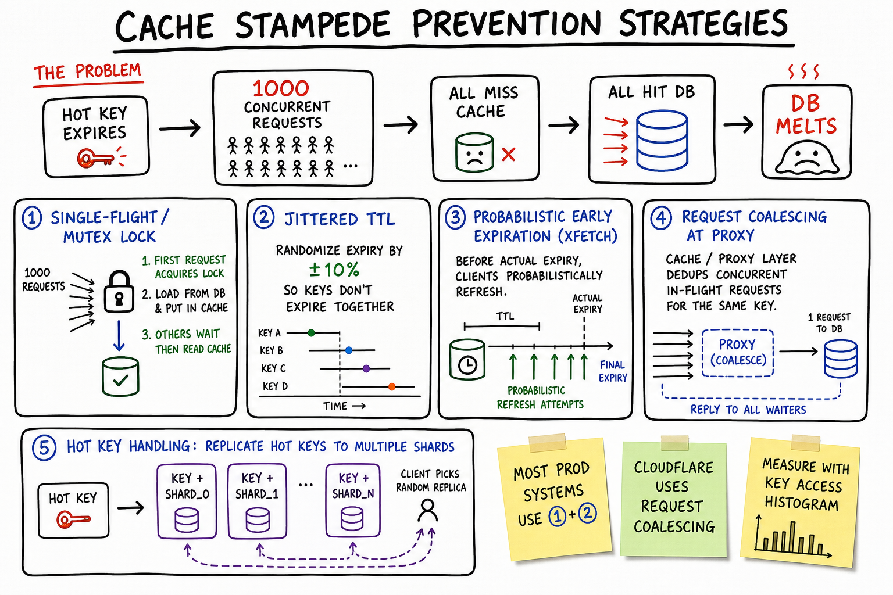

Distributed Cache // HLD
Sub-millisecond cache cluster in front of slow data sources: consistent-hash sharded, primary+replica per shard for HA, LRU/LFU/TinyLFU eviction, cache-aside / read-through / write-behind patterns, stampede prevention with single-flight + jittered TTL, hot-key replication, online resharding.

Whiteboard HLD: clients compute hash(key) and route directly to the owning shard via a consistent-hash ring (with virtual nodes). Each shard is Primary + N replicas with async replication. Sentinel / Cluster Manager monitors health and triggers failover. Backing store (Postgres/MySQL) sits behind for misses. Right column shows the 4 cache patterns (aside, read-through, write-through, write-behind).
01 — Requirements
Functional
GET key,SET key value [TTL],DEL key— the basics- Atomic operations:
INCR,CAS,SETNX, structured ops on lists/sets/hashes - TTL-based expiry (active + passive)
- Cluster mode: add/remove nodes online without big migration spikes
- HA: survive single-node failure transparently
- Multi-region replication (optional, for global apps)
Non-Functional
- Sub-millisecond latency (p99 < 1 ms in-DC)
- Very high throughput: 100M+ ops/sec across cluster
- High hit rate — ~99% target; otherwise the backing store collapses
- Bounded memory — LRU/LFU evict when full; no OOM
- Best-effort durability (cache is not the source of truth)
- Eventual consistency across replicas is acceptable for most cache workloads
01a — Core Entities
| Entity | Key Fields | Notes |
|---|---|---|
| Key | string, namespace, key | Usually {service}:{type}:{id}[:{field}]. Hash tags {user:42} force colocation. |
| Value | bytes (or struct: list/set/hash/sorted-set/stream) | Redis structures vs Memcached bytes-only. |
| TTL | seconds-from-set or absolute timestamp | Active expiry sweep + passive on access. |
| Shard | shard_id → key-range / hash-slot owner; primary + replicas | Redis Cluster: 16384 hash slots. Memcached: consistent hash ring client-side. |
| Cluster Topology | shard → (primary, [replicas], epoch) | Maintained by Sentinel / Cluster Manager; gossiped. |
| Eviction Policy | allkeys-LRU / volatile-LRU / LFU / TinyLFU / random | Per-DB or per-cluster setting. |
| Persistence (Redis) | RDB snapshot, AOF append-only log | Memcached has no persistence. |
| Metric / Counter | hits, misses, evictions, ops/sec, used_memory | The signals you actually monitor. |
01b — API Design
Client-facing (in the app)
cache.get(key) -> value | nil cache.set(key, value, ttl=300) -> ok cache.delete(key) cache.incr(key, delta=1) -> new_value (atomic) cache.setnx(key, value, ttl) -> ok | conflict (used for locks) cache.mget([k1, k2, ...]) -> [v1, v2, ...] (batch, pipelining) cache.cas(key, expected_version, new_value) -> ok | conflict
Cluster control plane
cluster.nodes() -> list of shards + roles cluster.move-slot(slot, from, to) -> orchestrate resharding cluster.failover(shard) -> promote replica cluster.reshard(target_nodes) -> rebalance hash slots
Client redirection (Redis Cluster)
Client sends GET k1 to shard A. A computes slot(k1) and finds it now lives on shard B. A returns: MOVED 1234 10.0.0.5:7001 Client updates its slot map and retries against B. ASK 1234 ... is used during in-flight slot migration.
The non-obvious contract: clients hold a slot map and reconnect on MOVED. The proxy/sentinel is only there for health and failover, not for every request.
02 — Estimation
Throughput target: 100M ops/sec Per-shard cap: ~150K ops/sec (Redis), ~1M ops/sec (Memcached on big NIC) Shards needed: ~700 Redis or ~100 Memcached (memcached scales hotter) Memory: 10 TB hot data Per node: 64 GB usable -> ~160 nodes With 2x replicas: ~480 nodes total Latency budget: RTT in-DC: ~0.3 ms Server work: ~0.1 ms (hash table lookup + serialize) p99 target: <1 ms Hit rate: 99% target -> backing store sees 1% load At 100M ops/sec cache, backing store sees 1M ops/sec -> still a lot, must amortize
03 — Why It's Hard
- Sub-ms latency at 100M ops/sec requires direct client → shard routing (no proxy round-trip)
- Online resharding when adding capacity — slot migration without dropping requests
- Hot keys can melt a single shard while the rest are idle
- Cache stampede when a hot key expires — 1000 concurrent misses all hit the backing store
- Eviction policy choice directly determines hit rate — getting it wrong wastes 90% of the cache
- Consistency with the source of truth: stale reads, write-after-evict, cross-region replication lag
- Failover without losing state — cache is best-effort, but a thundering herd on the backing store on every failover is unacceptable
04 — Architecture
App / Service App / Service
| |
| (client computes hash slot)
v v
+-----------------+ +-----------------+ +-----------------+
| Shard 1 | | Shard 2 | | Shard N |
| Primary <----- async replication ---> | | Primary |
| Replica 1 | | Replica 1 | | Replica 1 |
| Replica 2 | | Replica 2 | | Replica 2 |
+-----------------+ +-----------------+ +-----------------+
^ ^ ^
| health pings | |
+-----------------------+-----------------------+
|
+---------------+
| Cluster Mgr / |
| Sentinel | (monitors, triggers failover)
+---------------+
On miss: App -> Backing store (Postgres/MySQL) -> populate cache (SET TTL)
06 — Cache Patterns

Zoom: 2×2 matrix of cache patterns. Cache-aside (app manages cache; most common). Read-through (cache library handles miss). Write-through (sync write to cache + DB). Write-behind / write-back (async flush; fast but loss risk).
Pattern decision table
| Pattern | Best for | Pitfall |
|---|---|---|
| Cache-aside | Default. App reads cache, on miss reads DB, writes cache. | Race on simultaneous miss + writes (cache stampede; stale write-back). |
| Read-through | When you want the cache to be transparent (e.g. EHCache, Caffeine). | Need a cache lib integrated with the DB driver. |
| Write-through | Need cache and DB consistent at all times. | Doubles write latency; cache becomes critical path. |
| Write-behind | Write-heavy workloads (counter increments, metrics). | Crash = lost writes; eventual consistency model. |
See caching concepts primer for invalidation strategies (TTL vs explicit purge vs write-through).
07 — Eviction Policies
| Policy | How | When to use |
|---|---|---|
| LRU | Evict least-recently-used. Doubly-linked list + hash map. | Default; works well when access pattern has temporal locality. |
| LFU | Evict least-frequently-used. Count-based with aging. | Long-tail workloads where some keys are always hot. |
| TinyLFU (Caffeine) | Frequency sketch (count-min) gates whether a new entry beats the LRU victim. | State of the art: combines recency + frequency cheaply. |
| FIFO | Evict oldest by insertion. | Rarely best; simple. |
| Random | Evict a random victim. | Surprisingly close to LRU at much less cost; default in Memcached-style slab allocators. |
| allkeys-LRU vs volatile-LRU | Evict any key vs only TTL'd keys. | If you have a mix of permanent + cached data, use volatile-LRU to protect the permanent ones. |
"What's your eviction policy?" is a real interview question. The right answer depends on workload — benchmark, don't guess.
08 — Cache Stampede Prevention

Zoom: stampede problem and the four canonical mitigations — single-flight mutex, jittered TTL, probabilistic early expiration (XFetch), request coalescing at the proxy — plus hot-key replication across shards.
The four strategies
- Single-flight / mutex lock: first request acquires lock (
SETNX), recomputes from DB, others wait briefly then read cache. Bounded backing-store traffic to 1 per key per expiry. - Jittered TTL: instead of TTL=600s exactly, use
600 ± 10%— prevents synchronized expiry of bulk-warmed keys. - Probabilistic early expiration (XFetch): before actual expiry, clients probabilistically refresh.
P(refresh) = exp(-beta * (ttl_remaining / ttl)). Diffuses the recompute spike. - Request coalescing: cache layer / proxy de-duplicates concurrent in-flight requests for the same key; only one fetch to backing store, all waiters get the result.
Most production systems use 1 + 2 (single-flight + jitter). Cloudflare and many CDNs do 4 (coalescing) at the edge.
09 — Hot Keys
One key being requested at 1M ops/sec while every other key is at 100. The owning shard melts; the rest of the cluster is idle.
Detection
- Per-key access histogram (count-min sketch) at each shard or client
- Top-K heavy hitters reported to control plane
- Threshold: e.g. any key > 5% of a shard's traffic
Mitigation
- Replicate hot keys to N shards: actual key replaced with
(key, shard_id)for the client; reads pick a random replica - Client-side cache for hottest keys (CLIENT TRACKING in Redis 6; ~5 ms TTL is enough to flatten the spike)
- Local in-process LRU on each app instance for ultra-hot small values
- Pre-emptive sharding: for content with known hot keys (celebrity profiles), pre-shard by predictable suffix
10 — Replication & HA
Per-shard replication
- Primary handles writes; replicates async to replicas (1–2)
- Reads can go to replicas (eventual consistency) or primary (read-your-write)
- On primary failure, sentinel quorum promotes a replica
- Old primary, when it rejoins, demotes to replica (avoid split-brain via epoch+fencing)
Multi-region replication
- Active-passive: primary region serves writes; other regions are read-only replicas; failover by DNS / config change
- Active-active (CRDT in Redis Enterprise): each region writes locally; last-write-wins or commutative merge
- Trade-off: cache is best-effort; if you need cross-region strong consistency, don't use a cache for that
Persistence (Redis only)
- RDB: periodic snapshot to disk; fast restart but loses last N seconds
- AOF: append-only log of every write; near-zero data loss but slower writes and bigger files
- Hybrid: RDB snapshots + AOF tail since last snapshot
11 — Memcached vs Redis
| Aspect | Memcached | Redis |
|---|---|---|
| Data model | Bytes only (opaque blob) | Strings, lists, sets, hashes, sorted sets, streams, HyperLogLog, geo, bitmaps |
| Threading | Multi-threaded (uses cores natively) | Single-threaded core (use multiple processes / IO threading in 6+) |
| Persistence | None — pure cache | RDB snapshots + AOF |
| Replication / HA | None native (client-side / mcrouter) | Sentinel + Cluster mode native |
| Memory allocator | Slab allocator (fixed-class) | jemalloc |
| Use case | Pure look-aside cache, very high throughput | Cache + atomic counters + leaderboards + pub/sub + locks + queues |
| Operational complexity | Very low | Higher (especially Cluster mode) |
If you only need get/set/del at extreme throughput, Memcached often wins. If you need data structures, atomicity, persistence, or pub/sub, Redis. Most teams pick Redis by default; Facebook famously runs Memcached at planet scale via mcrouter.
12 — Scaling
- Add shards horizontally — consistent hashing minimizes key movement (~1/N keys migrate per node added)
- Add replicas — scales reads + improves availability
- Tiered cache: in-process L1 (Caffeine) → in-DC distributed L2 (Redis) → backing store
- Per-region clusters for global apps; replicate only the keys that matter cross-region
- Pipelining: batch many ops per round trip → 10× throughput per connection
- Connection pooling / multiplexing at the client (especially with Lettuce/redis-py async)
- Watch the cache hit rate — the single most important metric. Drop below ~95% and the backing store will scream.
13 — Edge Cases
- Shard failover mid-write → some recent writes may be lost (async replication); app must tolerate — cache, not source of truth
- Network partition → clients on either side may see different views; cluster sentinel quorum prevents split-brain
- Resharding mid-traffic → ASK redirect handles in-flight slot migration; clients tolerate transient misroutes
- Memory pressure / eviction storm → sudden drop in hit rate; backing store load surges; circuit-break and serve stale
- Cache poisoning → bad value cached with long TTL; need explicit purge endpoint and key versioning
- Stale-while-revalidate → serve slightly stale on miss while async refresh; smooth user experience
- Big key (10 MB value) → slow ops block single-threaded Redis; alert and refactor (chunk it)
- Slow command (
KEYS *, bigLRANGE) → blocks Redis core thread; teach engineers to useSCANinstead - Time skew on TTL → clocks must be synced (NTP) or TTL boundaries shift
14 — Real-World Equivalents
| System | Notes |
|---|---|
| Facebook Memcached + mcrouter | Famous talk on scaling Memcached: leases for stampede, mcrouter for routing, replication and warm-up. |
| Twitter Twemcache | Fork of Memcached; tuned for Twitter's slab fragmentation issues. |
| AWS ElastiCache | Managed Redis + Memcached; handles cluster mode, multi-AZ failover, sharded. |
| Redis Enterprise | Active-active CRDT replication across regions; the "enterprise" edition. |
| Caffeine (in-process) | TinyLFU; the gold standard for L1 cache in JVM apps. |
| Hazelcast / Apache Ignite | Java-native distributed caches with stronger consistency models (paxos). |
| Varnish / Cloudflare | HTTP-level cache; same patterns at a different layer. |
15 — Interview Q&A
How does a client find which shard owns a key?
hash(key) mod num_slots; looks up which node owns that slot; sends the command directly. On stale map, the node responds MOVED slot ip:port; client updates and retries. No proxy round-trip in the hot path.How does consistent hashing minimize remapping when nodes change?
What's a cache stampede and how do you prevent it?
SETNX lock so only one request fills the cache; (2) jittered TTL to avoid synchronized expiry; (3) probabilistic early expiration (XFetch); (4) request coalescing at the proxy. Most teams combine 1 + 2.How do you handle a hot key?
Cache-aside vs write-through — when do you pick which?
How do you choose an eviction policy?
volatile-LRU protects the non-TTL keys.How do you reshard online without dropping requests?
MIGRATE atomically. In-flight client requests on the source get ASK redirect, which is a one-shot hop (not a topology update). Once the slot is empty, gossip the new ownership; clients update slot maps via MOVED.Redis vs Memcached — how do you choose?
What happens if a shard's primary fails?
MOVED. Old primary, when it returns, demotes to replica based on epoch comparison; no split-brain.How do you achieve sub-ms latency at 100M ops/sec?
KEYS *, big LRANGE). Run shards on hosts with high-bandwidth NICs and on-CPU latency-optimized scheduling.How do you keep the cache consistent with the source of truth?
cache.delete(key). Combine them for safety (TTL as backstop). Avoid write-through unless you really need cache and DB perfectly in sync — it doubles write latency and ties their availabilities together.